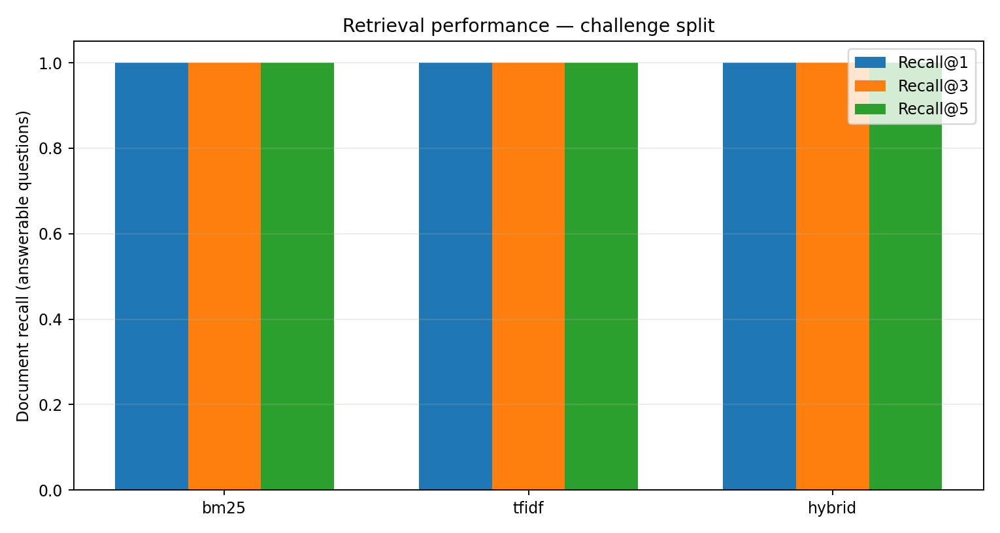
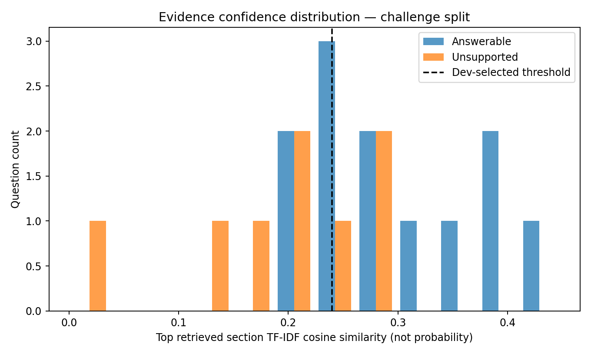
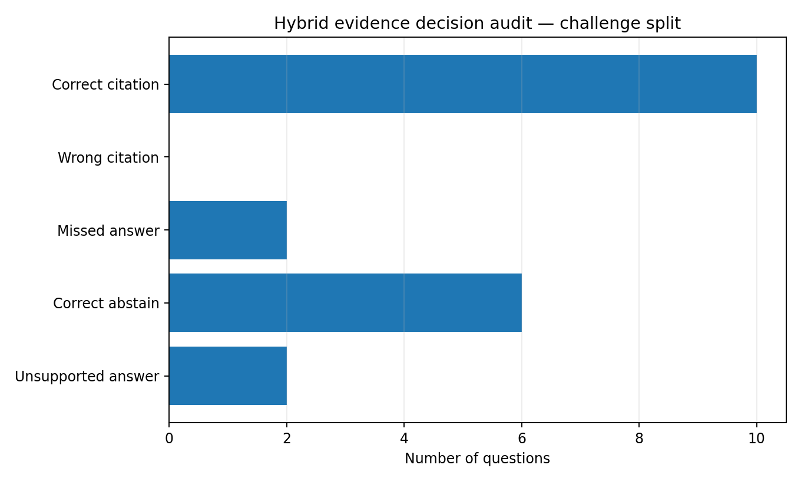

Offline RAG evaluation
TraceRAG Evidence Audit
Split: test · Document-level retrieval · Extractive evidence only
Retriever comparison
| Mode | Recall@1 | Recall@3 | MRR@5 | Supported response accuracy | Unsupported false-answer rate |
|---|---|---|---|---|---|
| bm25 | 0.958 | 1.000 | 0.979 | 0.719 | 0.250 |
| tfidf | 1.000 | 1.000 | 1.000 | 0.719 | 0.250 |
| hybrid | 1.000 | 1.000 | 1.000 | 0.719 | 0.250 |
Scores reflect a small, synthetic benchmark. Citation correctness is evaluated against gold document IDs, not human-labeled answer spans. Confidence is a lexical similarity score, not a calibrated probability.
Finding the correct runbook

When should the system abstain?

Evidence decision audit

Reproduce
python -m tracerag.cli evaluate --split test --out reportsReview the CSV files for per-question errors and the JSON file for unrounded aggregate metrics.